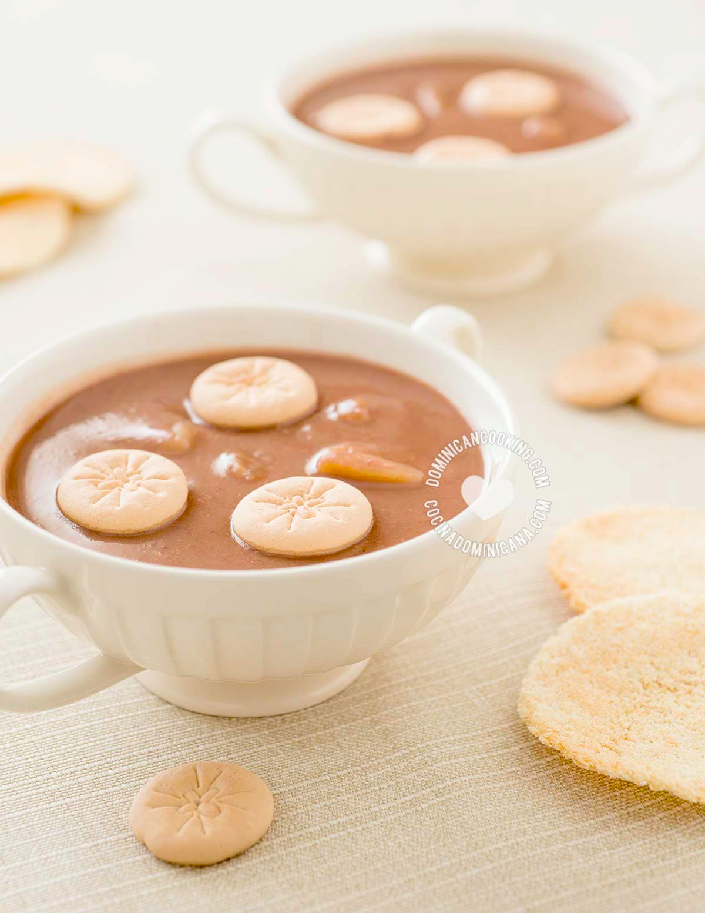

HABICHUELAS CON DULCE (SWEET CREAM OF BEANS)

Have you ever had habichuelas con dulce? Well, then be prepared to be pleasantly surprised by this amazing Dominican sweet cream of beans. This is a strange combination of ingredients for a dessert, but we Dominicans absolutely love this Lenten tradition!
HISTORY
Unlike most of our dishes, there isn't an equivalent in other countries that we've found (although bean-based desserts are known in some countries). In short, we have no definitive answer yet, but you can see where Aunt Ilana's investigation led us about the origin and history of habichuelas con dulce. It's a very interesting read.| Ingredients | To garnish |
|---|---|
| 4 cup boiled red kidney beans, (or cranberry or pinto beans) | 8 pieces casabe , (cassava bread), may be omitted |
| 6 cup water, from boiling the beans | 2 teaspoons butter , (salted) |
| 2 cup coconut milk | 1 cup milk cookies, (see notes) |
| 3 cup evaporated milk | |
| ½ teaspoons salt | |
| 1 teaspoons vanilla extract | |
| 2 cinnamon sticks | |
| 10 cloves |